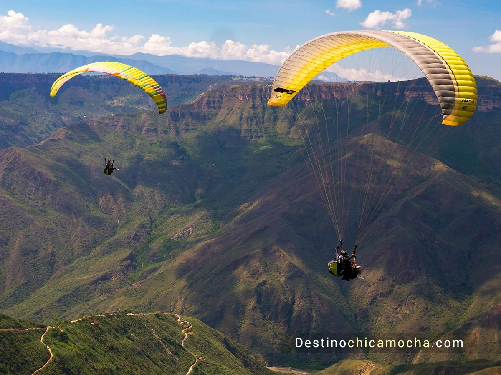

Soatá / Boavita (Cañón del Chicamocha, lado Boyacá)
Provincia del Norte · Región Norte
- Viento
- Actividad en altura
Fotos del lugar


Qué puedes hacer aquí
- Parapente
Condiciones de seguridad
- Vuela siempre con piloto instructor o escuela certificada.
- Las salidas dependen del viento: el operador puede cancelarlas por seguridad.
- Usa casco y arnés y sigue las instrucciones del instructor.
- Informa tu peso y condiciones médicas antes de la actividad.
[Recomendaciones generales: validar con el operador y fuentes oficiales]
Cómo llegar
¿Echas de menos un lugar?
Cuéntanos qué lugar o actividad deberíamos agregar, o si algún dato está desactualizado.